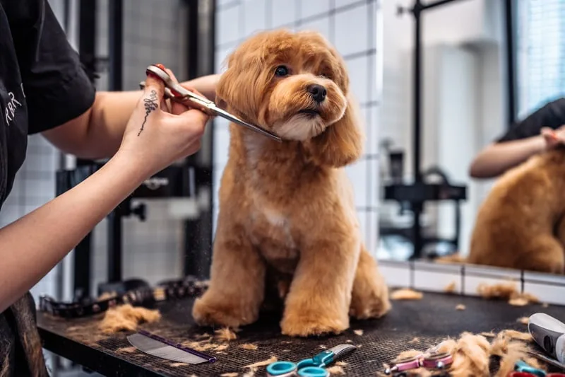
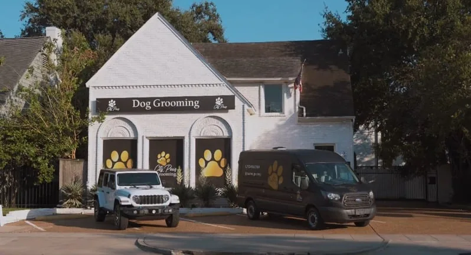

The River Oaks Salon
Our home at 1219 S Shepherd Dr — full pampering, Mon–Sat 8–5.
- Full grooms & custom haircuts
- Baths, facials & finishing touches
- Doodle & poodle specialist cuts
- 1219 S Shepherd Dr, Houston, TX 77019
GROOMING · HOUSTON
Dog grooming with elegance — in our River Oaks salon, or at your front door.

The story

The reveal · drag the comb
Every appointment ends with this moment. Slide the comb across and watch the groom happen — bath, brush, cut and finish, all in one pair of experienced hands.

 After
After
Shaggy before, groomed after — drag the comb across to wipe the groom in. Illustrated with two similar shih tzus; photos via Pexels.
Salon & mobile · two ways in
Our home at 1219 S Shepherd Dr — full pampering, Mon–Sat 8–5.

The van comes to your door — 7 days a week, 8–5, with the same groomers your pup already knows.
New pup, nervous pup, senior pup — we read their personality first, then groom. That's the CityPaws way.
Doodle & poodle headquarters
CityPaws became central to Doodle and Poodle grooming in Houston — the coats other groomers find tricky are the ones we love most. Teddy-bear cuts, face shaping, coat care between visits: this is our specialty, in the salon and on the mobile route.


“They were able to shape Beignet's face perfectly. They have truly earned the title ‘poodle/doodle’ headquarters.”
Mobile grooming
Call (713) 438-2844 or send the booking form below and choose “Mobile — at your door”.
The CityPaws van arrives at your home — no drop-off trip across town.
Your pup is groomed in the van by the same groomers as the River Oaks salon.
Clean, trimmed and home in minutes — no waiting room, no car ride.
Distemper / Parvo — must be current for every mobile appointment.
Kennel Cough — must be current for every mobile appointment.
Rabies vaccination — must be current for every mobile appointment.
Mobile · 7 days a week, 8:00 AM – 5:00 PM
Salon · Mon–Sat, 8:00 AM – 5:00 PM
In the press · OutSmart Magazine
“We have every pup's best interest at heart. We analyze their personality and the way they react to the grooming process so we can give their parents the best advice regarding current and future care for their pups.”
— Danni Betancourt, founder · OutSmart Magazine · Marene Gustin
The scoreboard
Rated 4.5 stars across roughly 150 Google reviews — earned one careful groom at a time, from Rice Village beginnings to the River Oaks salon and the mobile van.
“Ms. Danni was so warm and inviting. She made me and my two little babies feel so welcomed… They were able to shape Beignet's face perfectly. They have truly earned the title ‘poodle/doodle’ headquarters. Thank you City Paws!!”— Google review
“City Paws Grooming in Houston did an excellent job on my poodle, Mars.”— Google review
Now hiring · Join the team
CityPaws is hiring grooming positions in Houston now. Email your resume to management@citypawshtx.com — attach your resume and use the subject “Grooming position application”.
Full grooms and custom cuts in the River Oaks salon and on the mobile route. Rate listed at $15–$20/hr (employer-provided, per Glassdoor listing).
Apply — email your resumeBathing, brushing and a calm pair of hands beside our groomers. Rate listed at $15–$20/hr (employer-provided, per Glassdoor listing).
Apply — email your resumeBook a groom
Send the request and we'll call you back to confirm. Prefer to talk? Call us — the person who answers knows the grooming table.